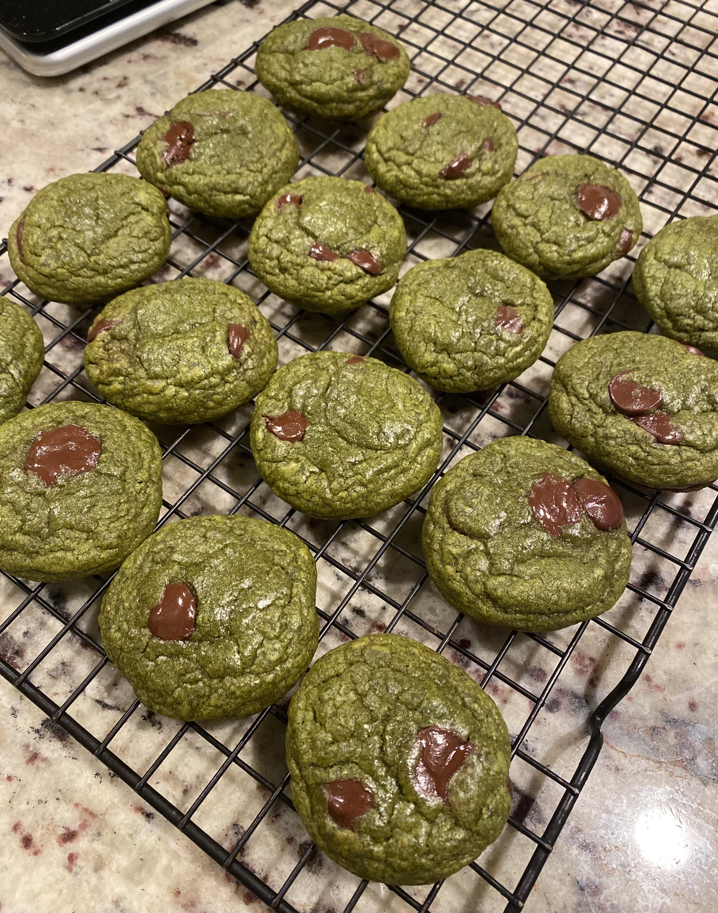

Matcha Dark Chocolate Chip Cookies

Description
My all-time favorite cookie recipe! Buttery, nutty, chewy, flavor-packed. The balance of the bitterness from the dark chocolate, the depth from the brown sugar, and the earthiness from the matcha makes for a perfect bite.
Ingredients
- 115g unsalted butter (about 1 stick of butter)
- 60g caster sugar
- 115g brown sugar
- 55g egg (about 1 large egg)
- 153g all-purpose flour
- 12g matcha powder
- 2g baking soda
- 1g salt
- 3g vanilla extract
- 70g dark chocolate chips (I prefer ghirardelli 60% cacao)
Steps
- Melt butter in a microwave.
- Add white sugar, brown sugar, salt, and butter to a medium bowl. Mix with a whisk.
- Add egg and vanilla extract to the same bowl and mix with whisk until well mixed.
- Sift flour, matcha powder, and baking soda into the bowl. Mix with a spatula until there are no dry spots.
- Add dark chocolate chips and mix until evenly distributed.
- Put bowl in the refrigerator for 30 minutes to 1 hour, allowing the dough to harden. The dough can be left overnight covered and baked the day after.
- Preheat the oven to 340°F.
- Shape about 2 tablespoons of the harden cookie dough into balls and place onto a baking sheet.
- Bake at 340°F for about 12 minutes.
- Allow cookies to fully cool before eating. Enjoy!